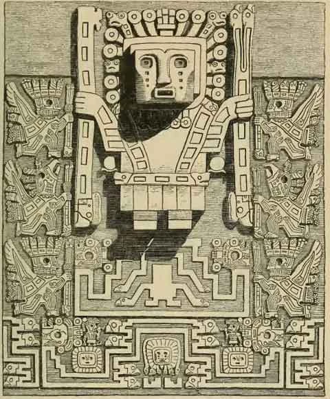

Viracocha: la deidad creadora del mundo andino
Viracocha es uno de los dioses más importantes de la mitología andina, particularmente en las culturas preincaicas e incaicas. Conocido también como Huiracocha, Wiraqucha o Con-Tici Viracocha, era considerado el dios creador del universo, del cielo, de la tierra, del mar, de los seres humanos y de todas las cosas vivas. Se le atribuía haber traído la civilización a los pueblos andinos, enseñando el arte, la agricultura, la arquitectura y la organización social.
El nombre Viracocha se interpreta comúnmente como "Espuma del mar" o "Señor del lago", aunque su etimología sigue siendo debatida. En quechua, wira significa grasa o energía, y qucha significa lago o mar, lo que algunos interpretan como "mar de grasa" o "energía del lago", haciendo alusión a su relación con las aguas primordiales del origen del mundo.
Viracocha fue concebido como una deidad suprema, anterior a todas las demás. Según los mitos andinos, él fue el primer ser que emergió del caos primigenio, cuando aún no existía la luz ni el orden. De este modo, se le atribuye el acto de creación de los cielos y la tierra. Luego creó a los primeros seres humanos a partir de piedra, pero estos no lo respetaron, por lo que decidió destruirlos mediante un gran diluvio.
Viracocha fue concebido como una deidad suprema, anterior a todas las demás. Según los mitos andinos, él fue el primer ser que emergió del caos primigenio, cuando aún no existía la luz ni el orden. De este modo, se le atribuye el acto de creación de los cielos y la tierra. Luego creó a los primeros seres humanos a partir de piedra, pero estos no lo respetaron, por lo que decidió destruirlos mediante un gran diluvio.
Después del diluvio, Viracocha creó una nueva humanidad a partir de barro. Luego emprendió un largo viaje por el mundo andino, enseñando a los pueblos la cultura, las leyes, las normas sociales y las habilidades prácticas necesarias para la vida civilizada. Se decía que caminó desde el lago Titicaca hacia el norte, viajando por todo el Tahuantinsuyo, realizando milagros y dejando huellas de su paso en la geografía y en la memoria colectiva de los pueblos. En muchas versiones del mito, Viracocha aparece acompañado de dos asistentes o hijos: Imaymana Viracocha y Tocapo Viracocha, quienes lo ayudaban en su misión civilizadora. En otras variantes, también se le atribuye la creación del sol, la luna y las estrellas, aunque en otros relatos este rol lo cumple Inti, el dios del sol. Viracocha no solo era un creador, sino también una figura misteriosa y enigmática. A menudo se le describe como un anciano de piel clara, con barba y túnica, portando un bastón o un báculo. Esta imagen, recogida por cronistas como Pedro Cieza de León y el Inca Garcilaso de la Vega, ha generado controversia entre los estudiosos, pues algunos han especulado con la idea de que los pueblos andinos pudieron haber tenido contacto con navegantes extranjeros mucho antes de la llegada de los españoles. Sin embargo, no hay evidencia concluyente que respalde esa teoría, y la descripción puede tener un fuerte componente simbólico o metafórico.
El mito del diluvio que aparece en la leyenda de Viracocha tiene similitudes con otras cosmogonías del mundo, como el mito bíblico de Noé, el de Utnapishtim en la epopeya de Gilgamesh, o el de Deucalión en la mitología griega. Estas coincidencias han sido objeto de estudio por parte de historiadores de religiones comparadas, aunque no se ha demostrado una conexión directa entre estas culturas. La figura de Viracocha precede al Imperio Inca. Se han encontrado evidencias de su culto en culturas como la Tiahuanaco (ubicada en la actual frontera entre Bolivia y Perú), donde se erigieron templos y estelas con figuras que se interpretan como representaciones suyas. En Tiahuanaco, por ejemplo, la famosa “Puerta del Sol” muestra la imagen de un dios con rayos solares que emanan de su cabeza, sosteniendo dos báculos: una imagen que muchos arqueólogos identifican como una versión temprana de Viracocha. Aunque los incas reconocían a Inti como su dios solar y como figura central en su cosmovisión, Viracocha ocupaba un lugar más alto como el dios creador de todas las cosas. De hecho, el mismo emperador Viracocha Inca, que reinó antes de Pachacútec, adoptó el nombre del dios como parte de su título, evidenciando el prestigio que tenía esta divinidad en el ámbito político-religioso incaico. El culto a Viracocha no era centralizado como el de otras deidades. Al parecer, no contaba con un 
Durante la colonización española, la figura de Viracocha fue reinterpretada o confundida con conceptos cristianos. Muchos indígenas cristianizados identificaron a Viracocha con Dios Padre, por sus atributos de creador y su relación con el cielo. Algunos cronistas coloniales, como Cristóbal de Molina, recogieron relatos de indígenas que mencionaban a Viracocha como un dios “de barbas largas” que prometió volver algún día, lo que algunos españoles interpretaron erróneamente como una profecía sobre su llegada. En cuanto a la iconografía, Viracocha ha sido representado en textiles, cerámicas y esculturas de piedra. Aunque no hay una imagen única ni unificada de él, comúnmente se lo muestra con forma humana, con elementos que aluden al poder creador, como bastones, rayos o símbolos solares. En algunas representaciones aparece llorando, lo cual ha sido interpretado como una muestra de compasión por la humanidad, o como una alusión a las lluvias que fertilizan la tierra. En la cosmovisión andina, Viracocha representa el principio ordenado que emerge del caos. Su figura articula el mito de los orígenes con una dimensión moral y cultural: no solo creó el mundo, sino que también dio a los seres humanos normas para vivir en comunidad. Su enseñanza incluía valores como la reciprocidad, la armonía con la naturaleza y el respeto por las jerarquías. A pesar de la colonización y el proceso de extirpación de idolatrías llevado a cabo por los misioneros españoles, el culto a Viracocha no desapareció por completo. En muchas comunidades andinas, su recuerdo se mantuvo vivo de manera sincrética, mezclándose con creencias cristianas. Incluso hoy, en ciertos rituales tradicionales andinos, se invoca a “el Creador” o “el Señor del Universo” con fórmulas que recuerdan al dios Viracocha.